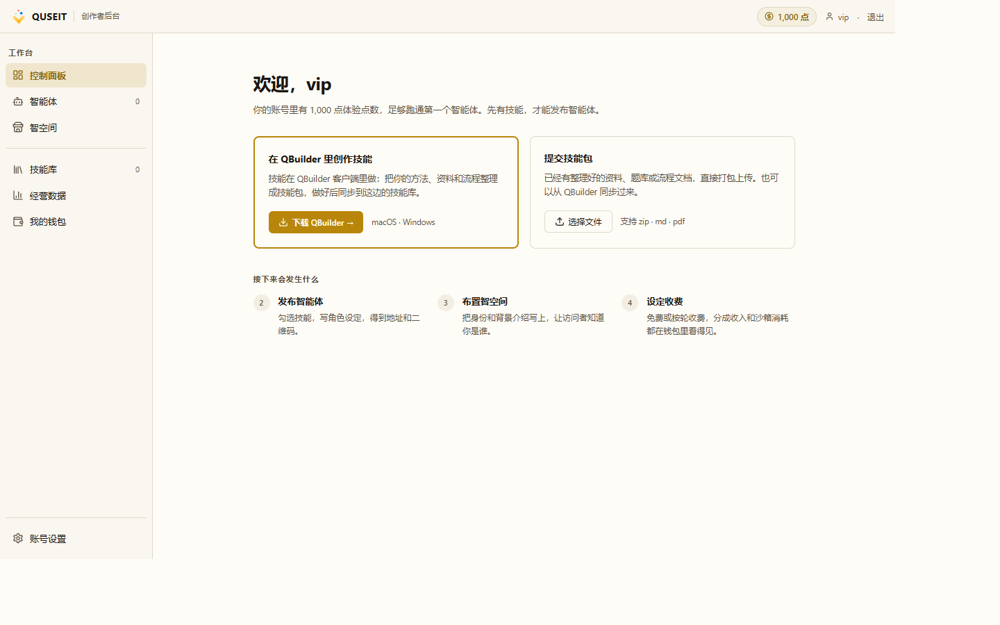
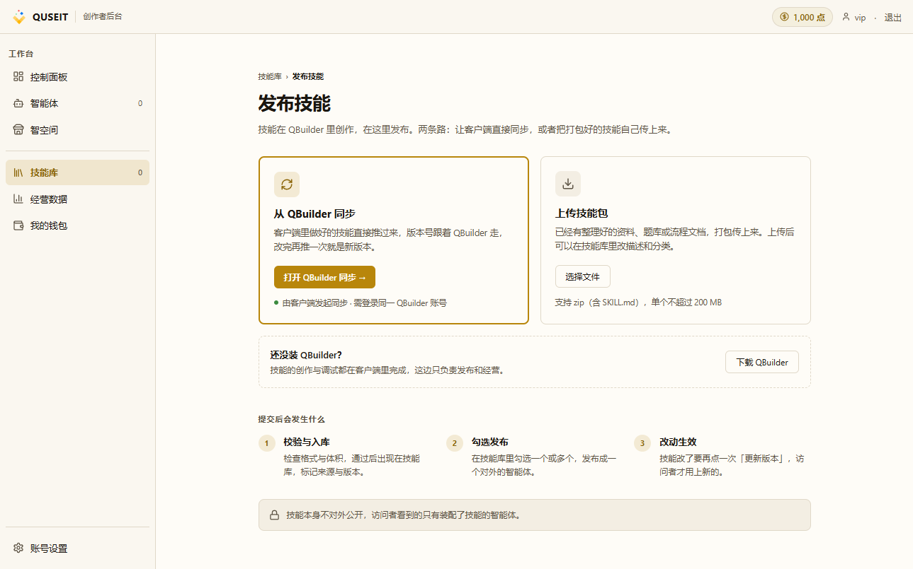
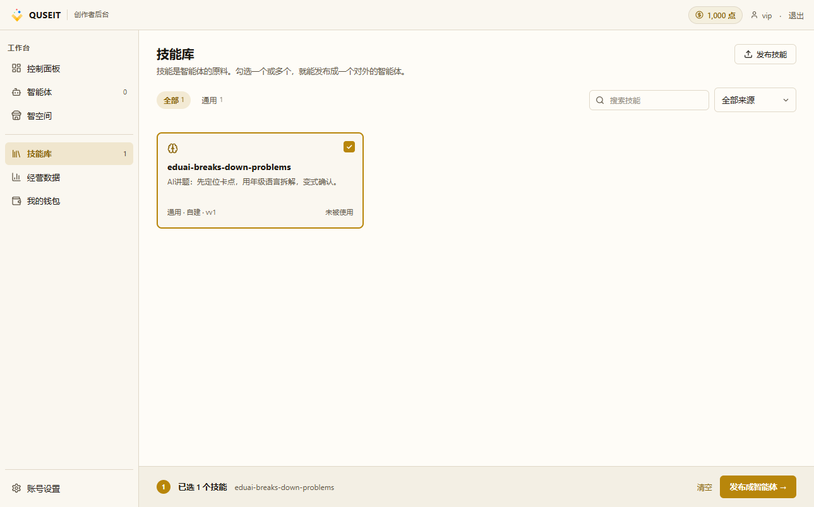
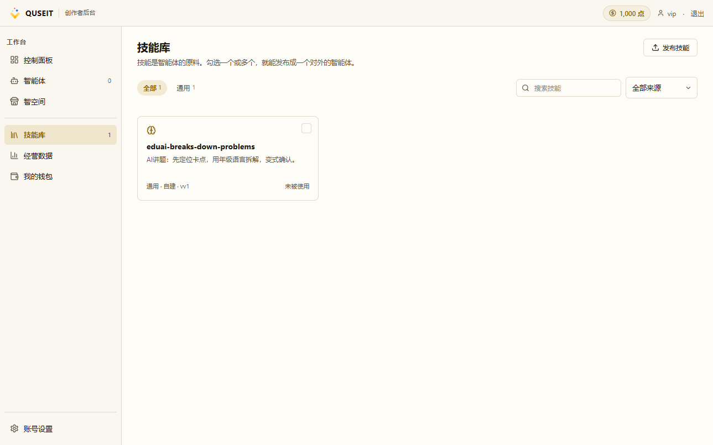

把技能同步进智空间
PATH 01 第 1 课。本课介绍将本地技能导入 QUSEIT 技能库的两种同步路径,并说明勾选后进入发布向导的衔接步骤。
前置条件技能包根目录须直接包含
SKILL.md(大小写敏感),且该文件须给出 name、description、instructions 三项基本字段;整个压缩包不得大于 200 MB。部署为 direct 模式(未配置平台模型网关)的创作者,还需先在「账号设置 → 模型与密钥」中配置自有模型密钥,否则后续发布流程将被前端拦截。
登录成功后,系统默认进入「控制面板」页:

两条同步路径

| 路径 | 入库标记 | 适用场景 |
|---|---|---|
| 路径 A · QBuilder 同步 | 来自 QBuilder |
已在本地维护技能、需频繁迭代的场景(推荐) |
| 路径 B · 上传 zip | 自建 |
未安装 QBuilder 客户端、仅做一次性导入 |
路径 A · QBuilder 同步(推荐)
STEP 01
在 QBuilder 中完成技能的开发与自测
在 QBuilder 桌面端内编写 SKILL.md、示例输入输出及必要的工具挂载,并完成本地联调,确认技能在本地可调用。撰写规范见 QBuilder 教程的「5 分钟创建你的第一个智能体」一文。
首次执行同步前,客户端将引导用户关联 QUSEIT 账号。该流程基于凭票与 SSO,凭票有效期为 10 分钟。完成关联后,后续同步不再要求重新登录。
STEP 02
通过对话触发同步
在 QBuilder 对话中向 Agent 发出指令「将技能发布到智能体空间」。客户端凭登录态将技能包推送至服务端;服务端按 SKILL.md 校验通过后写入技能库,标记为「来自 QBuilder」。
STEP 03
勾选并进入发布向导
在「技能库」页定位刚入库的卡片(标记「来自 QBuilder」),勾选其右上角的复选框。勾选数 ≥ 1 时,页面底部将出现常驻操作条,右侧主按钮为「发布成智能体 →」。点击后即进入 PATH 01 第 2 课所述的三步发布向导。

路径 B · 上传 zip
STEP 01
将技能目录打包
将技能目录打包为 .zip。要求 SKILL.md 位于压缩包根目录,不得嵌套于子目录中。
SKILL.md置于子目录 → 服务端无法定位,直接报错。- 压缩包超过 200 MB → 前端直接拦截,后端不接收。
STEP 02
上传并核对入库结果
在「发布技能」页点击「选择文件」或直接将 .zip 拖至卡片。上传成功后,页面自动跳转至「技能库」。新条目标记为「自建」,默认分类为「未分类」。随后的衔接操作与路径 A 一致:勾选卡片 → 点击「发布成智能体 →」进入发布向导。

常见踩坑
- 入库后列表中未见新条目:首先在 QBuilder 对话中查看错误日志,常见原因为
SKILL.md字段缺失或包结构不符合要求。 - 勾选后未出现「发布成智能体 →」按钮:说明勾选未生效 — 再次点击卡片右上角的复选框,确认卡片描边变为金色。
- 上传后分类显示为「未分类」:属预期行为。zip 上传不携带客户端所维护的分类元数据,系统占位「未分类」,需在「技能库」页手动调整。
- 删除技能时弹出拒绝提示:删除对话框将列出「正在被 N 个智能体使用」,凡存在引用的技能均不可删除;须先在相关智能体中替换该技能,再行删除。